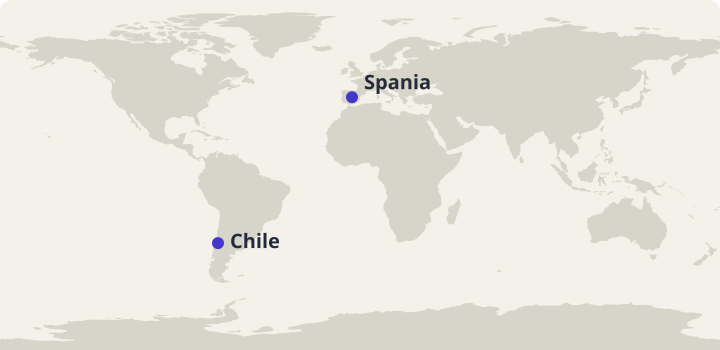
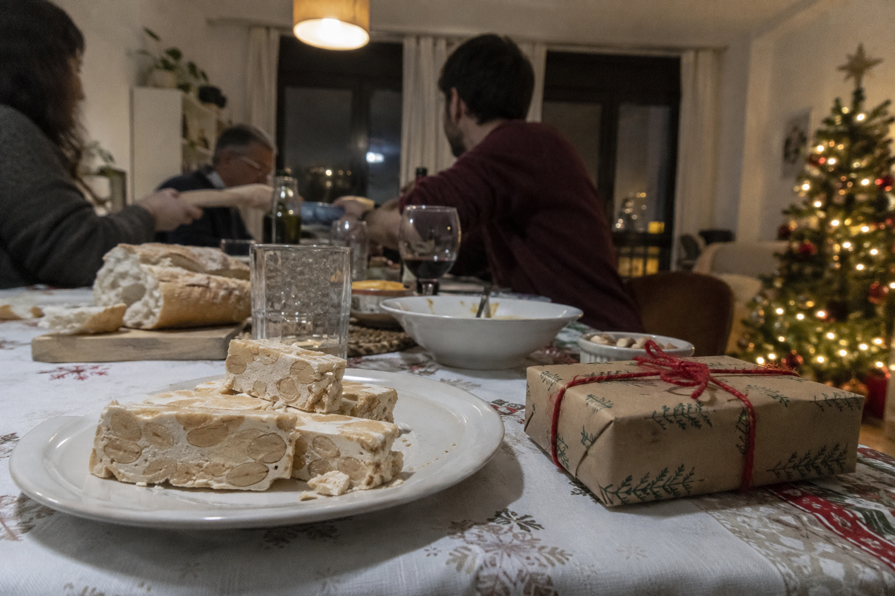
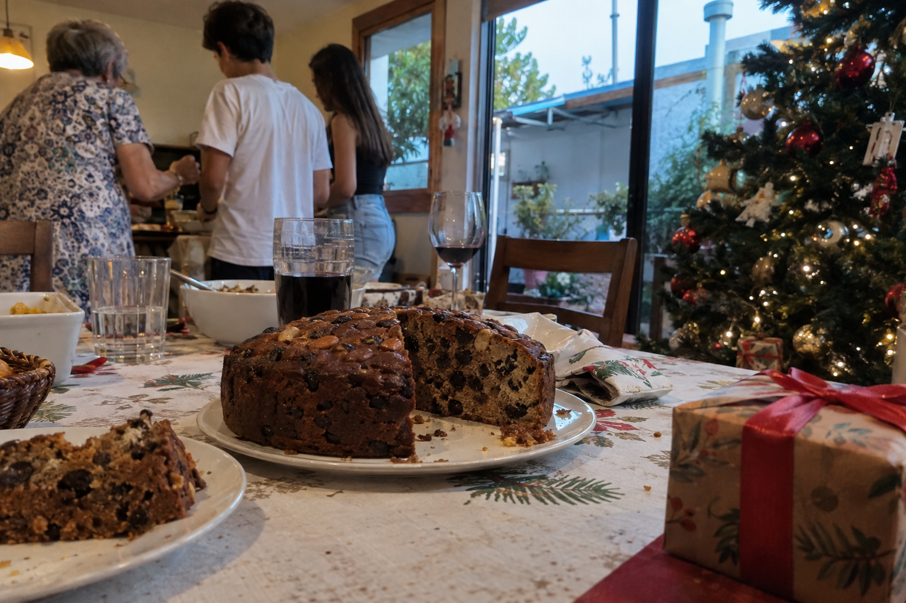

Arbeidsutkast · til lærervurdering
45 minutter · les, oversett og sammenlign
Jul i Spania og Chile
To land, samme høytid.
Hvordan feires jul i Spania og Chile? Les tekstene, oversett muntlig sammen med en partner og sammenlign juletradisjonene.

Spania ligger i Europa. Chile ligger i Sør-Amerika. Kartgrunnlag: Natural Earth.
Les og oversett i par
- Les teksten høyt sammen. Bytt på å lese ett avsnitt hver.
- Oversett ett avsnitt om gangen muntlig til norsk. Pek eller trykk på understrekede ord når dere trenger hjelp.
- Hjelp hverandre med ord og setninger dere er usikre på.
Pek eller trykk på understrekede ord i teksten for å se norsk oversettelse. Numrene i bildene viser bildeord.
Europa
Navidad en España

Bildet kunne ikke lastes. Du kan fortsatt lese teksten og bruke ordoppslagene.
- la familia familie
- el turrón her: mandelkonfekt
- el regalo gave
- el árbol de Navidad juletre
En España, , pero no es igual en todas . Durante diciembre, tienen y . En ciudades como Madrid y Barcelona hay . , y para , una representación del de Jesús.
El 24 de diciembre, para . Nochebuena. La cena puede incluir , o . El menú la familia y la región. la comida es una oportunidad para conversar y .
también forman parte de estas fiestas. Un ejemplo es . Hay diferentes tipos de , y en la ilustración aparece uno con . Otro es , que se come durante estas fiestas.
El 31 de diciembre es Nochevieja, . Una tradición es comer doce : una por del reloj. Algunas personas las campanadas por televisión; otras en .
en enero. El 5 de enero hay de , por las calles. Muchos niños el 6 de enero. se llaman Melchor, Gaspar y Baltasar.
Cada familia tiene sus ; celebran . Estos ejemplos ayudan a algunas tradiciones, pero no la vida de todas las personas en España.
Faktakilder: Spanias offisielle turistportal: juletradisjoner · Spanias offisielle turistportal: julemarkeder · Spanias offisielle turistportal: årstider og vær. Vis til teksten når du begrunner svarene.
Sør-Amerika
Navidad en Chile

Bildet kunne ikke lastes. Du kan fortsatt lese teksten og bruke ordoppslagene.
- la familia familie
- el pan de Pascua et chilensk julebakverk med frukt, nøtter og krydder
- el regalo gave
- el árbol de Navidad juletre
En Chile, la Navidad . En , de verano pueden ser y . , el tiempo cambia de a otra: en también . Verano no el mismo tiempo en todo .
El 24 de diciembre, para y . Esa noche también se llama Nochebuena. En puede haber carne, y . Cada familia qué ; para todas .
Un dulce es , con , y . puede : en esta tradición, Pascua la Navidad. El dulce en .
A Papá Noel también . los regalos , cuando el 24 de diciembre y el 25. Para , es de la noche.
luces y , incluso cuando es verano. El 25 de diciembre, algunas personas hacen una comida o van a un parque. pasan el día en casa.
Cada familia tiene sus costumbres; no todas celebran de la misma manera. Las tradiciones cambian las personas, el lugar y sus . Estos ejemplos no describen a todos de Chile.
Faktakilder: Chile Travel: Viejo Pascuero og juletradisjoner · Chile Travel: regionale klima- og årstidsforskjeller. Vis til teksten når du begrunner svarene.
Spørsmål til tekstene
Velg ett svar på hvert spørsmål.
Utforsk kultur
Sammenlign og spør
- På hvilken måte feirer de jul på samme måte i Spania og Chile?
- På hvilke måter er julefeiringen ulik i Spania og Chile?
- Hvorfor er «algunas familias» og «no todas» nyttige når vi skriver om kultur?
- Hva ville du spurt en person som bor i et av landene om?
Åpne spørsmål har flere rimelige svar. Lytt til partnerens begrunnelse.
Bruk språket i par
Lag to eller tre korte spanske setninger med minst tre nøkkelord. Den ene sier en setning, den andre spør eller legger til noe fra tekstene. Bytt roller. Avslutt med et spørsmål dere fortsatt har.
Prøv en utvidelse
Gi et kort råd til en som skal besøke et av landene.
Juleord du kan bruke videre
Øv på de ti ordene fra teksten. Prøv å huske svaret før du snur kortet.
Lær julegloseneValgfritt glosesett: Jul i Spania og Chile. Kom tilbake og repeter ordene. I glosemodus vises det når ordene er klare for repetisjon.
Se de ti ordene
| Spansk | Norsk |
|---|---|
| la Navidad | jul |
| la Nochebuena | julaften |
| el verano | sommer |
| la familia | familie |
| el regalo | gave |
| cenar | å spise middag/kveldsmat |
| el dulce | søtsak |
| la costumbre | skikk, tradisjon |
| juntos/juntas | sammen |
| a medianoche | ved midnatt |
Dekk den spanske kolonnen i ordlisten. Si ordet før du sjekker. Bytt deretter retning. Sett et lite merke ved ord du vil øve på igjen.
| Spansk | Norsk |
|---|---|
| la Navidad | jul |
| la Nochebuena | julaften |
| el verano | sommer |
| la familia | familie |
| el regalo | gave |
| cenar | å spise middag/kveldsmat |
| el dulce | søtsak |
| la costumbre | skikk, tradisjon |
| juntos/juntas | sammen |
| a medianoche | ved midnatt |